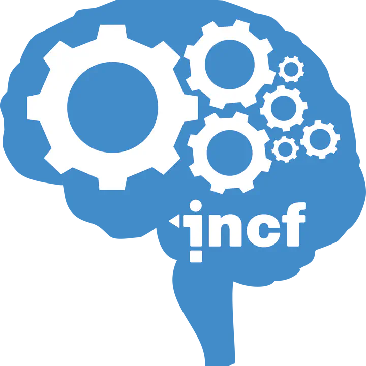

C-PAC
About
Neuroimaging
Pipelines
How to Use
Tutorials
Projects
User Support
Appendix
this page is under construction. to suggest content-related edits, please open a
content-related PR
User Support
Neurostars

submit a neurostars question
Reminders & Memory-Joggers
C-PAC Engine Documentation
|
Developer Docs
|
Devops Platform Docs